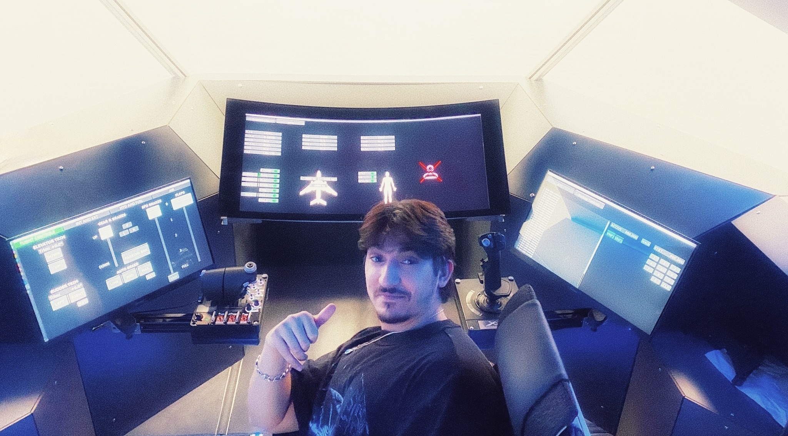
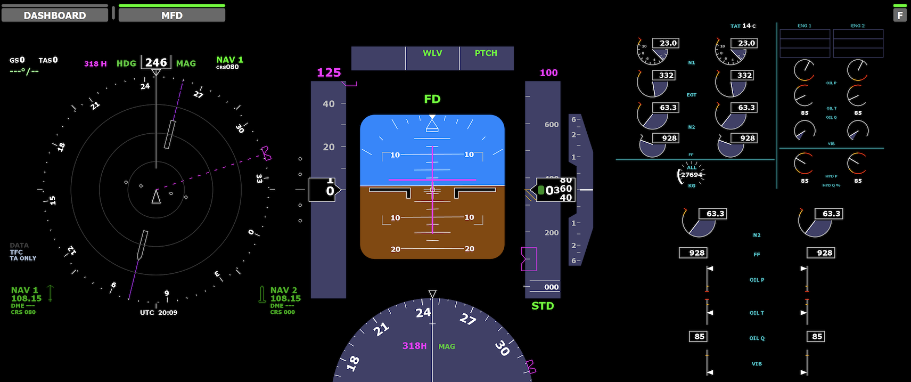
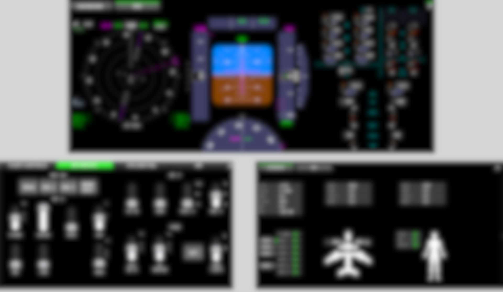
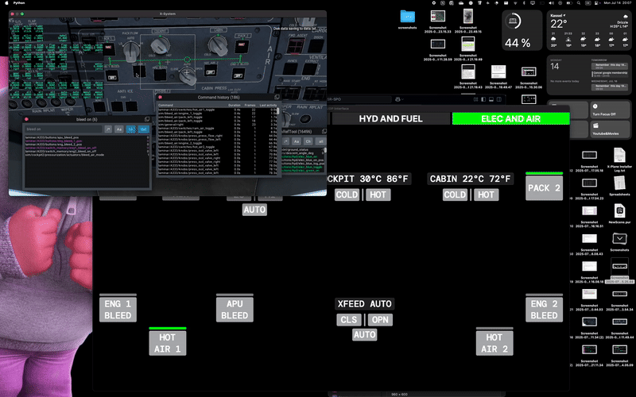
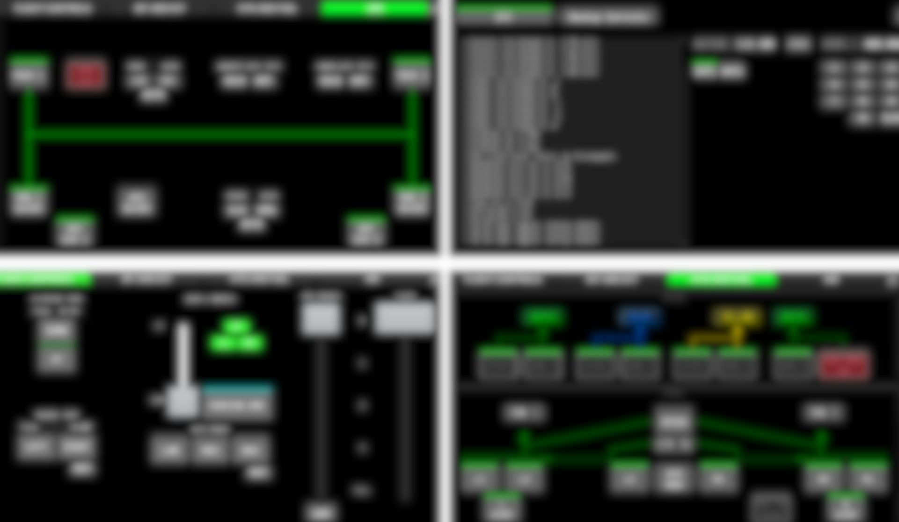
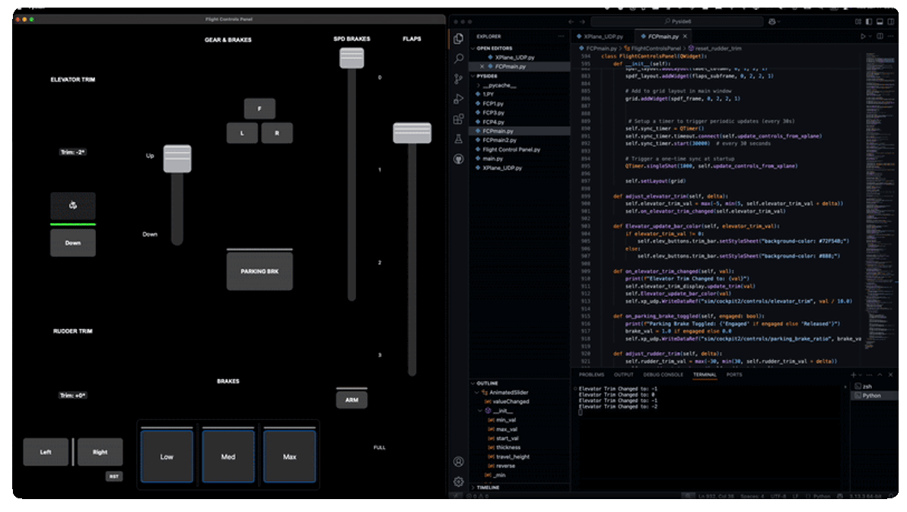
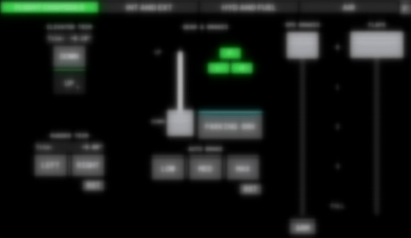
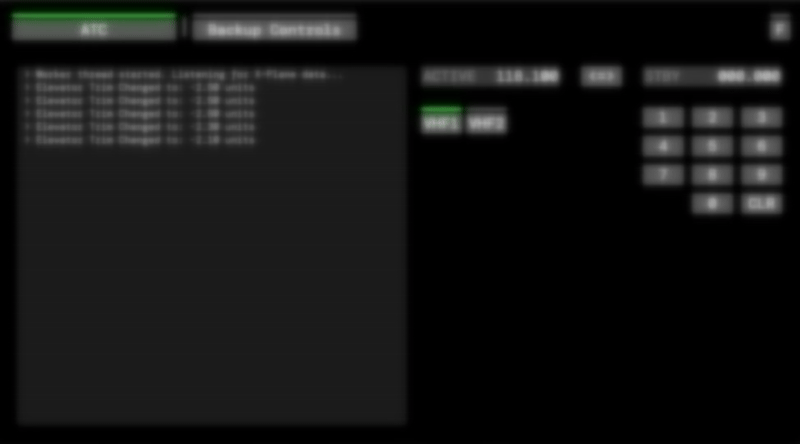
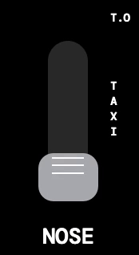

Geschwärzte Bilder nur zur Referenz — Projekt unterliegt einem NDA

Im Simulator-Dom — FSR TU Darmstadt
Alle drei Monitore zeigen die PySide6-GUI live im FSR-Dom. Links: Flugsteuerungspanel; Mitte: Flugzeugsynoptik; rechts: Backup-Systeme. Jedes Panel wird von echten X-Plane-12-Telemetriedaten über UDP mit 50 Hz gesteuert.
Stack
PySide6 · X-Plane 12
XHSI Plugin · UDP / Multi-threading
Python 3 · QTimer sync
XHSI Plugin · UDP / Multi-threading
Python 3 · QTimer sync
Key Numbers
50 Hz data rate
< 20 ms end-to-end latency
Grade 1.3 awarded
< 20 ms end-to-end latency
Grade 1.3 awarded

Primäres Flugdisplay + MFD — XHSI-Plugin
Links: ND (Navigationsanzeige / HSI) mit Kursrose und Verkehrshinweisen. Mitte: PFD mit Lageanzeige, Geschwindigkeitsband, Höhenband und FD-Balken. Rechts: Doppeltriebwerks-Instrumente. Alle über das XHSI-Drittanbieter-Plugin gerendert, gespeist von Live-X-Plane-12-Datarefs über UDP.

GUI aktiv — Live-Flugtest
Alle Panels aktualisieren sich gleichzeitig während einer aktiven Simulator-Sitzung. Demonstriert die unter-20-ms-Latenz vom X-Plane-Dataref-Wechsel bis zur Bildschirmaktualisierung über alle gleichzeitigen Widgets hinweg.

Cockpit Layout Overview [NDA]
Vollständige Einpiloten-Fensteranordnung: ND + PFD + Triebwerkssäule oben, zusätzliche Systeme und Synoptik-Seiten unten. Mehrere unabhängige PySide6-Widgets zu einer einheitlichen Bedienansicht zusammengefügt.

HYD & Kraftstoff / ELEK & Luft — Live-Test
Zapfluftsystem-Seite streamt live von X-Plane. ENG 1/APU/ENG 2 BLEED-Zustände, XFEED AUTO und HOT AIR-Schalter reagieren direkt auf X-Plane-Datarefs über die mehrfädige UDP-Verbindung.

ECAM Systems Pages Grid [NDA]
Vier Synoptik-Seiten gleichzeitig angezeigt: Elektrisches Busdiagramm, Systemdatentabelle, Hydraulikschaltplan und Flugsteuerungs-Oberflächenseite mit blau/gelb/grüner Betätigungs-Farbkodierung. Jede Seite ist ein separates PySide6-Widget mit eigenem Dataref-Set.

Flugsteuerungspanel — PySide6 + Quellcode
Nebeneinander: FCP-UI und FCPmain.py. Verwaltet Höhenruder-Trimmung (±3° animierter Schieberegler), Seitenruder-Trimmung, Fahrwerk & Bremsen, Spoiler und Klappen — jede schreibt zurück in X-Plane-Datarefs. QTimer synchronisiert den Steuerzustand vom Simulator alle 30 s beim Start.

FCP Operational View [NDA]
Höhenruder-Trimmungsanzeige, Fahrwerk- & Bremsleuchten, Spoiler- und Klappenregler (Niedrig / Mittel / Max). Alle Bedienelemente bidirektional verknüpft — physische Inzeptor-Bewegung in X-Plane aktualisiert die GUI in Echtzeit.

ATC + Backup Controls [NDA]
ATC-Funkverwaltung: Aktive/Standby-Frequenz, VHF1/VHF2-Auswahl und Live-Befehlsprotokoll. Backup-Steuerungen bieten eine Ausweich-Schnittstelle bei Ausfall der primären Displays — erfüllt die Einpiloten-Redundanzanforderung.

Buglicht — AnimatedSlider
Benutzerdefinierter PySide6 AnimatedSlider mit diskreten T.O / TAXI-Rasten für die Buglandescheinwerfer-Steuerung.
Reusable Component
Die gleiche AnimatedSlider-Klasse steuert Spoiler, Klappenhebel und alle anderen schiebergesteuerten Bedienelemente — einmal schreiben, überall in der GUI einsetzen.